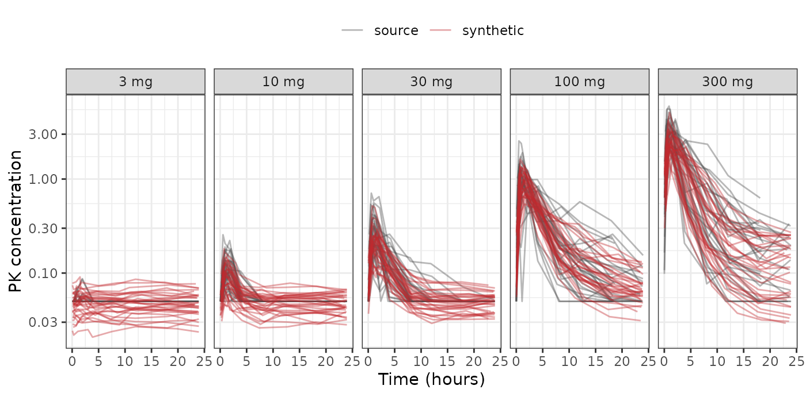
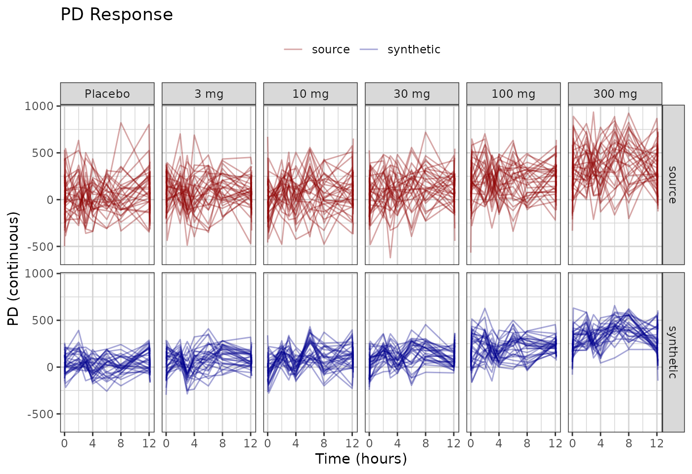
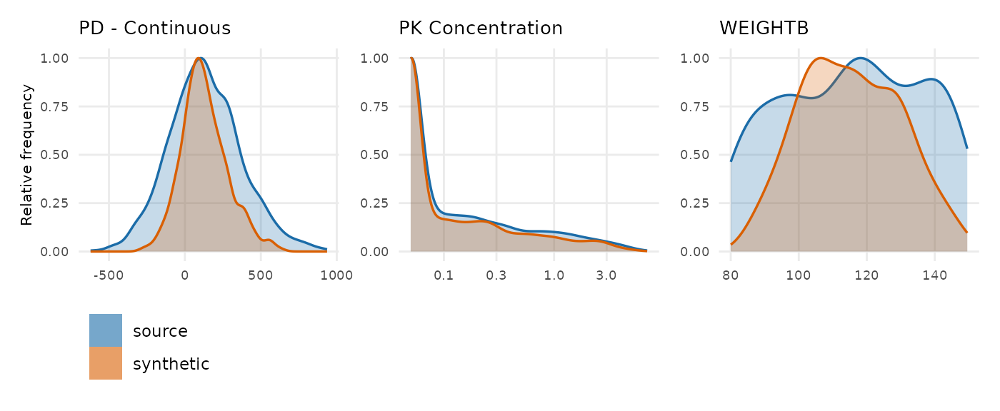

Generate a synthetic dataset, look at it, and read the checks of the data, sumamrized in a scorecard.
vignette("scorecard-synthetic-data-checks") is the
reference for better understanding the synthetic data checks.
The dataset is xgxr::case1_pkpd: 180 patients, six arms
from placebo to 300 mg, with a pharmacokinetic (PK) concentration
endpoint and a continuous pharmacodynamic (PD) endpoint.
Configuration
To run this on your own study, edit the two chunks below that:
- Read in the dataset.
- Define the column roles.
The rest of the code can be kept as is.
library(dplyr)
raw <- as.data.frame(get(utils::data(list = "case1_pkpd", package = "xgxr"))) |>
mutate(CENS = ifelse(NAME == "PD - Continuous", 0, CENS))
SEED <- 808The column meanings. Columns not specified here are dropped from the synthetic dataset.
roles <- pmx_roles(
id = "ID",
time = "TIME",
dv = "LIDV",
cens = "CENS",
amt = "AMT",
evid = "EVID",
cmt = "CMT",
dvid = "NAME", # which endpoint each observation row is
nominal_time = "NOMTIME", # the protocol grid
strata = c("TRTACT", "DOSE"), #treatment arms.
covariates = "WEIGHTB", # blended like everything else
keep = "STUDY" # carried through verbatim
)Generate Synthetic Data
synthetic <- synpmx_avatar(raw, roles, seed = SEED)
#> Warning: Synthetic generation used documented small-group/profile fallbacks:
#> - Endpoint `PD - Continuous` has generated observations at times no donor
#> was measured at; the cohort's median trajectory was used for those rows.
#> Expected wherever subjects were sampled on different schedules.
#> - Endpoint `PK Concentration` has generated observations at times no donor
#> was measured at; the cohort's median trajectory was used for those rows.
#> Expected wherever subjects were sampled on different schedules.Plot synthetic data and original data
library(ggplot2)
library(xgxr)
xgx_theme_set()
comparison_colours <- c(source = "#1B6CA8", synthetic = "#D95F02")
both <- rbind(
cbind(raw[, names(synthetic)], DATA = "source"),
cbind(synthetic, DATA = "synthetic")
)
obs <- both[both$EVID == 0 & !is.na(both$LIDV), ]
obs$TRTACT <- factor(obs$TRTACT,
levels = c("Placebo", "3 mg", "10 mg", "30 mg",
"100 mg", "300 mg"))
ggplot(obs[obs$NAME == "PK Concentration" & obs$TIME <= 24, ],
aes(TIME, LIDV, group = ID, colour = DATA)) +
geom_line(alpha = 0.4) +
facet_grid(DATA~TRTACT) +
xgx_scale_y_log10() +
xgx_scale_x_time_units("hours", breaks = seq(0, 24, by = 6)) +
scale_colour_manual(values = comparison_colours) +
labs(x = "Time (hours)", y = "PK concentration", colour = NULL) +
theme(legend.position = "top") +
ggtitle("Day 1 Conc. Profile")
ggplot(obs[obs$NAME == "PD - Continuous", ],
aes(TIME, LIDV, group = ID, colour = DATA)) +
geom_line(alpha = 0.35) +
xgx_scale_x_time_units(units_dataset = "hours", units_plot = "weeks") +
facet_grid(DATA~TRTACT) +
scale_colour_manual(values = comparison_colours) +
labs(x = "Time (hours)", y = "PD (continuous)", colour = NULL) +
theme(legend.position = "top") +
ggtitle("PD Response")
Distributions of Synthetic and Original Data
One panel per endpoint and per baseline covariate, source against
synthetic. compare_pmx_distributions_height() sizes the
figure, since it grows a row of panels at a time;
output = "tables" gives the numbers behind it.
compare_pmx_distributions(raw, synthetic, roles)
The curves sit on top of each other on both endpoints. Look at their
widths rather than their positions: the orange curve is visibly narrower
than the blue one for the PD endpoint and for baseline weight, and
slightly narrower for PK. That narrowing is between-subject variability
shrinking, which is what the AVATAR blending algorithm does rather than
a fault in the run. output = "tables" puts a number on it,
and the scorecard’s D1 row reports the variable that moved furthest.
The scorecard
The scorecard computes checks of the synthetic dataset. It is
described further in
vignette("scorecard-synthetic-data-checks").
scorecard <- synpmx_scorecard(raw, synthetic, roles)
synpmx_scorecard_datatable(scorecard)review is not a soft pass.
Five rows here have no pass mark because no threshold would be honest.
Doses per patient is the clearest: on this study it is unchanged, but on
a study with individualised dosing it can halve.
Every row names the call that explains it. When a
row reads oddly, run what its explore column says: the
numbers are a summary, and the call behind each one is where the answer
is.
Where to go next
-
vignette("scorecard-synthetic-data-checks")— every check, what it asks, and what passing means. -
vignette("public-data-examples")- AVATAR algorithm applied to 8 public datasets.